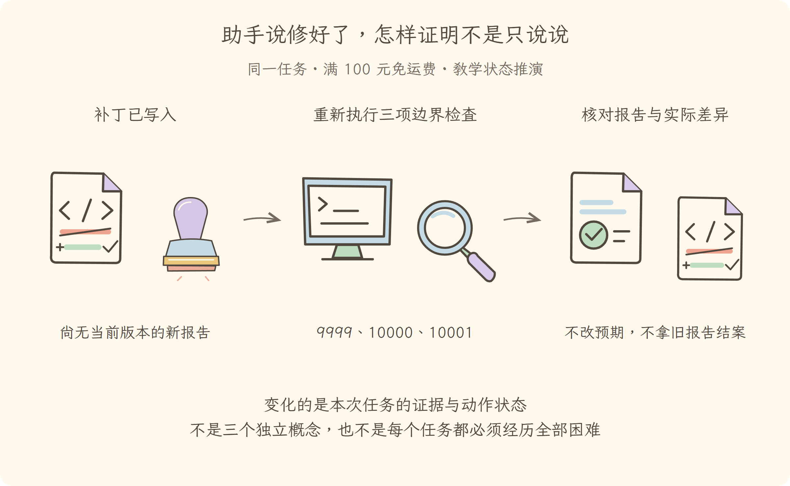

学习导航
第16讲 · 助手说修好了，怎样证明不是只说说
源码基线：cd5ef8148158c3a752a658978873241fdf8e2bbc。业务案例为虚构 Java 运费服务；图与流程是教学推演，源码事实另有固定证据。
从这里接上
补丁已写入，但还没有新测试证据。本讲要回答：助手说修好了，怎样证明不是只说说？
上一讲解决了“分清通知、等待、裁决和接力，拒绝错误控制流”；这仍不能代替本讲要补的责任。
阅读与完成标准
先看逐步讲解，再做练习。视觉课件用于复习，词典随用随查，不要求先背英文。预计正文阅读 20–35 分钟，练习 10–20 分钟；这是安排建议，不是学会的证明。
读完应能解释：助手回复完整且运行正常停止，为什么验收仍可能失败？ 还要能预测：修改后拿修改前的绿色报告交付，缺的是什么？ 最后从源码证据定位相应责任。
现在必须懂的是本讲怎样改变证据或动作状态；具体框架中的其他选项知道存在即可，不用一次读完整个包。语法卡住可查补课 A、补课 B，工程定位查补课 C，看完返回此处即可。
本讲交接
用边界三测、实际退出码、差异和授权记录验收。但下一步还要解决：拆掉框架名字，你还能解释这次排查吗。
← 第15讲：事件协作 · 第17讲：综合迁移 →
视觉课件
第16讲 · 助手说修好了，怎样证明不是只说说
源码基线：cd5ef8148158c3a752a658978873241fdf8e2bbc。业务案例为虚构 Java 运费服务；图与流程是教学推演，源码事实另有固定证据。
当前现场
补丁已写入，但还没有新测试证据。固定业务约定不变：满 10000 分免运费；原实现在等于时返回 800。禁止用修改预期的方式让测试变绿。

三分钟复述
先描述左格缺什么，再说明中格采取的机制，最后指出右格新增了哪些证据或责任。用边界三测、实际退出码、差异和授权记录验收。不要只读图上的物件名；删掉中间这项机制，任务会在哪一步失去依据？
本讲最容易误会的是：修改后拿修改前的绿色报告交付，缺的是什么？ 缺新测试与当前文件版本的关联；内容指纹可发现版本不一致，但仍需正确测试和业务判断。
从图返回源码
图只表达教学关联与状态变化，不代替完整调用顺序。源码定位提供实现或契约证据，正文解释映射和边界。
← 第15讲：事件协作 · 第17讲：综合迁移 →
逐步讲解
第16讲 · 助手说修好了，怎样证明不是只说说
源码基线：cd5ef8148158c3a752a658978873241fdf8e2bbc。业务案例为虚构 Java 运费服务；图与流程是教学推演，源码事实另有固定证据。
一、现在所有能力都工作了，为什么仍不能直接结案
前面已经把这次运费排查的执行器、插件和协作方式接好，补丁也确实应用了。助手输出一句“已修复”，看上去很完整。可这句话只是回复内容，不是测试证据。
Verification（验收核对）把“系统停止了”“动作执行了”“业务要求满足了”拆开。Evaluation（效果评估）则在更多任务和故障上衡量系统表现。一次用例通过可以支持本例的有限结论，不能推出真实智能体对所有项目都可靠。
三格为同一运费任务的教学状态变化或故障对照。图不是实际运行日志；关键区别见各格说明。
二、先确认我们没有偷偷换题
原题是查清“满 100 元免运费”边界失败原因，在获得授权后修复并验证。若改的是测试预期，让 10000 的预期变成 800，测试会绿，但业务目标被替换了。若干脆让所有金额都返回零，10000 会绿，9999 却被破坏。
因此三项验收不只是凑覆盖率，而是分别约束目标边界与左右行为。还应查看版本差异，确认只修比较符号，没有额外修改无关业务和测试预期。
三、运行结束不能当业务成功的证据
以下是固定提交中的定位片段（仅显示这一段前至多 20 行，不是完整函数）：
{ surfaceOp: 'append', sourceEventSeqs: chunkSeqs },
)
if (finish.kind === 'max-tokens') return { kind: 'max-tokens' }
const toolCalls = message.content.filter(block => block.type === 'tool-call')
if (toolCalls.length === 0) return { kind: 'completed' }
const { concluded } = await executeToolCalls(
this.loopCtx, turn, step, toolCalls, signal,
context => this.inbox.splice('next-step', this.inbox.nextStep.length, 0, [context]),
)
这里没有工具调用时可以返回正常完成状态。这证明当前模型步骤不再请求工具，不证明它说的话正确。即使它根本没读报告就结束，运行状态仍可能是正常结束；业务验收必须另外检查证据。
像一个 Java 请求返回了状态码成功，但数据库中该写的业务数据并未符合约束。传输或调度层完成，不等于目标事实成立。
四、把验收证据绑到当前文件
一份合格结案至少包含：业务约定出处、原失败输入和实际值、原因所在实现、修改许可、实际差异、执行目录、测试命令、退出码和针对的代码版本。
没有当前版本关联的绿色报告，很可能来自修改前或另一目录。代码变更后，旧测试证据应失效；执行工具返回“命令已启动”，也还不能当作进程正常结束。
本书教学运行器保存源码哈希，并要求最终测试哈希与当前代码一致。Hash（内容指纹）帮助发现版本不匹配，但它本身不证明代码正确；真正的正确性仍来自业务约定、测试范围和人工检查。
五、反例比口号更能暴露问题
故意让系统遇到七种情况：没有报告、只有报告没有代码、未授权写入、恢复时有悬空调用、摘要伪造授权、子任务只有结论没有证据、测试成功后代码又变了。
期望行为不是每次都成功，而是在证据不足时准确停止：能说明已经完成什么、哪里失败、还需要什么。失败后凭空生成漂亮结果，比明确报告未完成更危险。
同时区分三层实验：自编运行器验证教学约束；上游局部测试验证对应实现；真实模型与真实工具评测验证端到端任务效果。本轮运行器通过不能冒充后两层已通过。
六、可靠性不只看成功率
更多请求和更多帮手可能提高某些复杂任务成功率，也会增加费用、时延、重复材料和合并错误。评价时要记录任务是否正确、是否越权、失败是否可解释、耗时与请求量，而非只数工具调用次数。
本例的业务逻辑很小，通常无需分工和自动流程。全书逐步增加困难是为了理解机制，不是在推荐把所有机制都装到每个简单任务里。
七、结案模板
现在可以写：“已从报告、业务约定和实现确认边界判断遗漏等于；获得限定授权后只修改比较符号；针对当前文件重新执行边界三测并检查差异。未覆盖的行为仍列为未验证。”
如果其中任何一项没有证据，就把对应句改成“待验证”。最后一讲将去掉具体框架名字，用一个可运行的教学系统检查你是否真正掌握这些关系。
← 第15讲：事件协作 · 第17讲：综合迁移 →
练习与答案
第16讲 · 助手说修好了，怎样证明不是只说说
源码基线：cd5ef8148158c3a752a658978873241fdf8e2bbc。业务案例为虚构 Java 运费服务；图与流程是教学推演，源码事实另有固定证据。
先作答，再展开
1. 解释机制
助手回复完整且运行正常停止，为什么验收仍可能失败？
查看解释与边界
它可能没读证据、没真正修改或没针对当前版本测试；运行完成不是业务事实满足。 回到本例的 10000 分输入，把“想做”“做过”“有结果”分别说清。
2. 预测反例
修改后拿修改前的绿色报告交付，缺的是什么？
查看推演
缺新测试与当前文件版本的关联；内容指纹可发现版本不一致，但仍需正确测试和业务判断。 不是所有停止都叫完成，不是所有模型可见文字都有权限。
3. 源码与图相互校验
打开本讲定位，找到正文强调的分支或契约。遮住图中文字，解释左、中、右三格分别表示什么；指出图省略了哪一项实现细节。
参考核对方式
源码应支持本讲讲解的机制，而不是声称原仓库有运费业务。左格是“补丁已写入，但还没有新测试证据”，右格是“用边界三测、实际退出码、差异和授权记录验收”。图中物件不是对象类的完整结构，也没有证明真实工具已执行；按正文的失败边界解释即可。若图无法表达这个区别，应修改图，不是给它增加一段英文标签。
← 第15讲：事件协作 · 第17讲：综合迁移 →
分享稿
第16讲 · 助手说修好了，怎样证明不是只说说
源码基线：cd5ef8148158c3a752a658978873241fdf8e2bbc。业务案例为虚构 Java 运费服务；图与流程是教学推演，源码事实另有固定证据。
用自己的话讲给同事
我们还在查同一个 Java 运费问题：满 100 元应免运费，恰好边界却收了 8 元。走到本讲，已有条件是：补丁已写入，但还没有新测试证据。
如果不补这一层，会遇到的问题是：助手回复完整且运行正常停止，为什么验收仍可能失败？ 它可能没读证据、没真正修改或没针对当前版本测试；运行完成不是业务事实满足。 所以本讲新增的不是要背的名词，而是任务中一项明确的责任。
现在能做到：用边界三测、实际退出码、差异和授权记录验收。但还要守住反例：修改后拿修改前的绿色报告交付，缺的是什么？ 缺新测试与当前文件版本的关联；内容指纹可发现版本不一致，但仍需正确测试和业务判断。
请结合本讲图说出变化，再指向源码；不要宣称这段教学推演就是实际模型日志。下一讲顺着“拆掉框架名字，你还能解释这次排查吗”继续。
术语词典
第16讲 · 助手说修好了，怎样证明不是只说说
源码基线：cd5ef8148158c3a752a658978873241fdf8e2bbc。业务案例为虚构 Java 运费服务；图与流程是教学推演，源码事实另有固定证据。
词典用于回查，正文在首次使用处解释。代码、参数与路径保留原拼写；产品名称不逐字翻译。模型上下文和插件上下文不是一回事。
Verification（验收核对）
针对本次交付核对证据与要求，像验收这张工单。补丁存在、当前版本三测通过、范围获准都要检查，系统停止不是业务成功。
Evaluation（效果评估）
用多种任务和失败条件评估系统表现，像抽查一批工单。一次验收成功不能证明系统普遍可靠，需明确样本和判定标准。
Hash（内容指纹）
从内容计算出的指纹，像给代码版本贴身份标签。本例用它发现测试报告对应旧代码；指纹相同不证明业务逻辑正确。
核对来源
本讲源码定位与完整正文。本例报告和金额属于教学夹具，不来自这份上游源码。